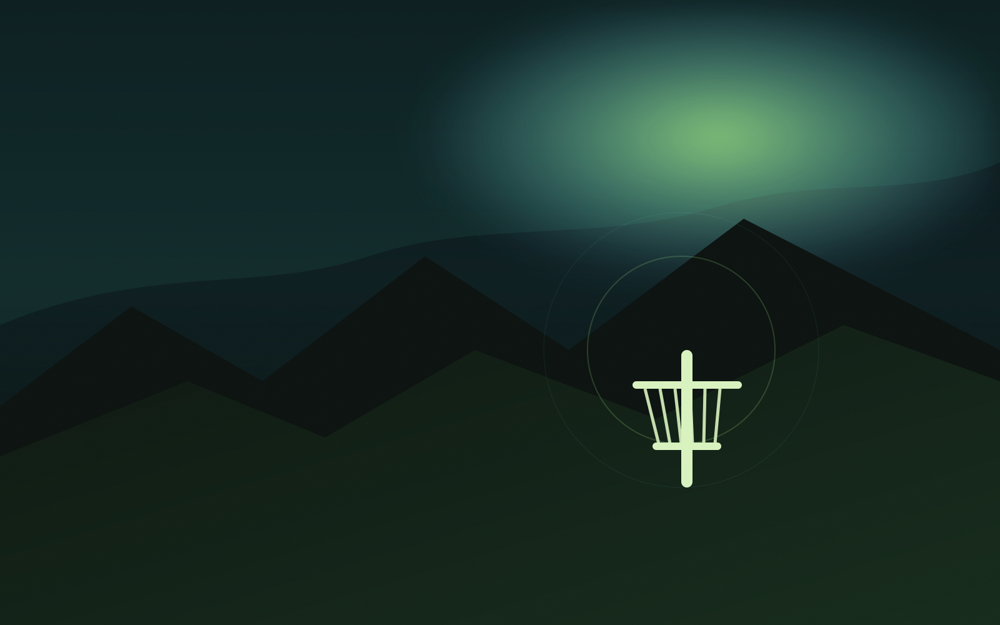

← Ísland
MÖÐRUDALUR Á FJÖLLUM
HÁLENDIÐ
Möðrudalur á Fjöllum er á austanverðu hálendinu og einnig skráður undir Austurlandi. Hér er einn staðfestur skráður völlur; aðgengi þarf að staðfesta.
1skráður völlur
VELDU VÖLL
Hálendið.
Athugaðu aðgengi áður en þú ferð. Við yfirferð 23. september 2026 merkti UDisc völlinn óaðgengilegan til leiks. Þar kemur einnig fram að körfur séu teknar niður yfir veturinn. Athuga stöðu á UDisc ↗ eða hafðu samband við Fjalladýrð ↗.
Enginn völlur fannst. Prófaðu annað heiti eða stað.
Um skráninguna
Möðrudalur er skráður hjá Visit Austurland og UDisc. Aðrir vellir á miðhálendinu fundust ekki staðfestir í þessari yfirferð. Þetta er ekki tæmandi skrá.
Visit Austurland · Náttúrufræðistofnun: Möðrudalur–Arnardalur